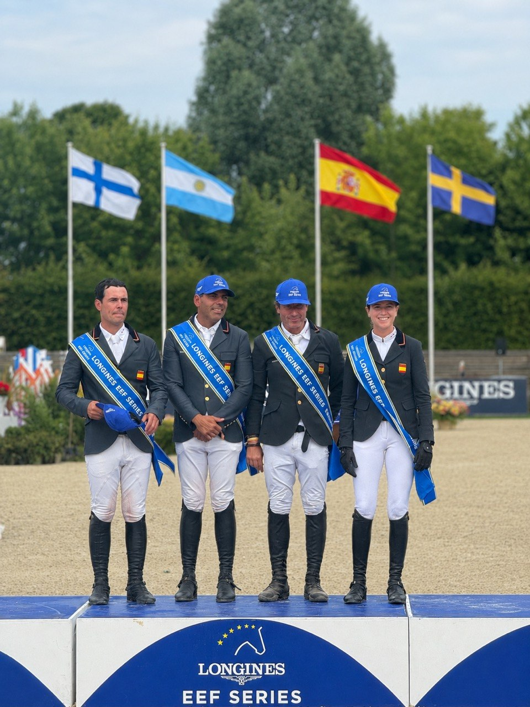

España convoca a siete jinetes para el CSIO3* de Deauville en junio
La Real Federación Hípica Española ha anunciado la lista de convocados para el CSIO3* de Deauville (Francia), que se disputará del 3 al 7 de junio de 2026, con cinco binomios en equipo y dos individuales.

La selección española de salto de obstáculos ha dado a conocer los nombres de los siete jinetes que representarán al país en el CSIO3* de Deauville, certamen internacional que se celebrará en la localidad francesa del 3 al 7 de junio próximo.
La convocatoria incluye cinco combinaciones para la competición por equipos: Carlos Bosch, Carlos López-Fanjul, Iván Serrano, Armando Trapote y Luis Ortiz conforman el núcleo del equipo nacional. Además, Gonzalo Busca y Sira Martínez completan la expedición como participantes individuales.
El CSIO3* de Deauville forma parte del calendario oficial de la Región Sur de la Federación Ecuestre Internacional y representa una oportunidad estratégica para los jinetes españoles de acumular experiencia en competiciones por naciones en un escenario europeo de nivel medio-alto. El formato CSIO (Concurso de Saltos Internacional Oficial) obliga a la disputa de una prueba de Copa de las Naciones, la competición por equipos más emblemática del calendario ecuestre.
Esta convocatoria se produce apenas días después del CSIO3* de Lisboa, disputado entre el 21 y el 24 de mayo en Portugal, y dos semanas antes del inicio de Deauville. El calendario primaveral de la FEI también ha incluido recientemente el CSIO3* de Lier en Bélgica (6-10 de mayo) y el CSIO3* en la Scuderia La Caccia de Bedizzole, Italia (13-17 de mayo), donde Irlanda logró su primera victoria en Copa de las Naciones de la temporada 2026 tras superar a Italia en el desempate.
La cita de Deauville supondrá un test importante para el equipo español en su preparación de cara a los compromisos internacionales de verano. Las combinaciones definitivas de jinetes y caballos serán confirmadas en los próximos días por el seleccionador nacional.